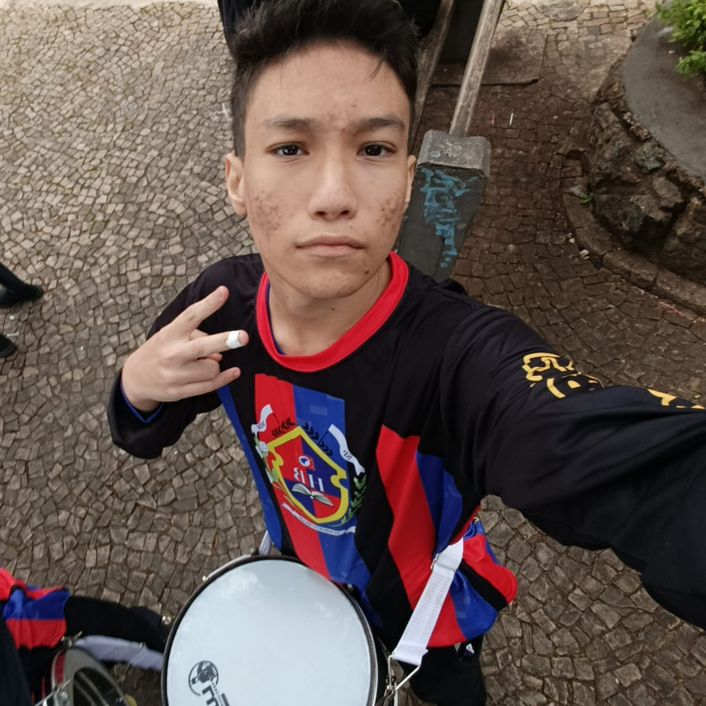

SOBRE MIM
Quem sou eu
Conheça um pouco sobre minha história, meus interesses e meus objetivos.
Olá, eu sou Bruno.
Olá! Meu nome é Bruno Favalli Ferreira, tenho 15 anos e estudo no 1º ano do Ensino Médio na ETEC Pedro Ferreira Alves, em Mogi Mirim, SP, cursando Desenvolvimento de Sistemas AMS.
Durante meus estudos, já explorei diferentes áreas, desenvolvo interesse por artes visuais, musica, design, historia, programação e ensino. Atualmente sei criar sites em HTML e aprimorar-los usando CSS, sei usar lógica de programação, entendo de scrpit e continuo aprimorando minhas habilidades para evoluir profissionalmente na área de tecnologia. Busco na minha carreira oportunidades para demonstrar meu trabalho e mostrar o que posso oferecer para empresas.
Este portfólio reúne um pouco da minha trajetória, meus trabalhos e projetos.

Sempre evoluindo.
Acredito que estar sempre evoluindo faz parte de qualquer trajetória. Gosto de aprender com as experiências, perceber no que posso melhorar e não ter medo de tentar coisas novas, mesmo quando não sei exatamente onde elas vão me levar.
O que busco; areas que me movem.
Criação Visual
Tenho muito interesse pela área de criação visual, design e artes visuais. Gosto de explorar diferentes formas de transformar ideias em algo visual, seja por meio de cores, composição, ilustração, tipografia ou outros elementos que fazem parte do processo criativo.
Tecnologia e Programação
Tenho interesse por tecnologia e programação, principalmente pela área de desenvolvimento de sistemas. Gosto de entender e de aprender sobre programação, lógica e desenvolvimento de soluções. Também acho interessante a parte de analisar problemas e pensar em formas de resolvê-los usando a tecnologia.
Educação e Ensino
Gosto da área de educação porque tenho prazer em aprender coisas novas. Tenho interesse tanto por áreas mais ligadas à lógica e tecnologia quanto por assuntos relacionados à criatividade, cultura e expressão. Também gosto bastante do processo de pegar algo que aprendi, organizar as ideias e tentar explicar de uma maneira que faça sentido para outra pessoa.